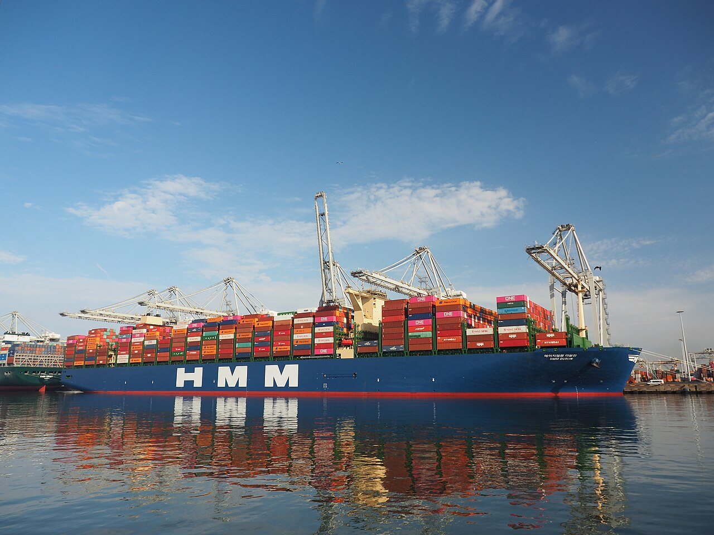

[해양 AI 융복합⑦] 이미 바다에 뜬 배에 올라탄 AI, 항로·엔진·선내 안전까지
해운협회가 꼽은 우선 분야, 최적항로·예측정비·선내 사고 예방
실증마다 3%에서 15%까지 다른 연료 절감 수치
새로 짓는 배만 똑똑해지는 것이 아니다. 지금 대양을 오가는 배에도 AI가 하나씩 올라탄다. 어디에 들어가 무엇을 하고, 그 효과를 어떻게 재는지 짚는다.
1. 협회가 꼽은 AI 우선 분야

한국해운협회는 2026년 7월 '해운업 AX 전략' 현안보고서를 냈다. AX는 AI 전환을 줄인 말이다. 보고서는 선사가 먼저 AI를 들일 분야로 최적항로와 스마트 문서, 예측정비, 선내 사고 예방 등을 꼽는다.
협회 부산본부는 9월 2일 부산무역회관에서 기술설명회를 열었다. 마린웍스와 HD현대마린솔루션 등 8곳이 기술을 발표했다.
남재일 HMM오션서비스 대표는 업계 사정을 전했다. 선박관리업계는 AX 대응을 "각 사가 개별적으로 해올 수밖에 없었다"는 것이다. 김성익 SK해운 대표는 "단 1달러의 경쟁력이라도 높이는 방안이 있다면" 더 힘써 달라고 당부했다.
협회 부산본부는 이 설명회를 시작으로 관련 행사를 정례화할 계획이다.
2. 날씨를 읽고 길을 고르는 AI
같은 바다를 건너도 드는 연료가 다르다. 바람과 파도를 어떻게 만나느냐에 달렸다. 최적항로 AI는 기상 예보와 배 성능 자료를 합쳐 연료가 덜 드는 길을 고른다.
일본 기상정보기업 웨더뉴스는 1986년 문을 열었다. 1970년 1월 오나하마항에서 화물선이 가라앉아 선원 15명이 숨진 사고를 창업 계기로 든다.
HD현대마린솔루션과 웨더뉴스는 2025년 1월 업무협약을 맺었다. 그해 9월부터 웨더뉴스는 HD현대마린솔루션 선박 성능 모델을 자사 항로 서비스에 얹어 판다. 모델 이름은 '오션와이즈'다.
이 서비스는 날씨와 함께 배가 받는 파도 저항과 추진력을 따진다.
웨더뉴스에 따르면 오션와이즈는 2024년 기준 600척 넘는 배에 설치됐다. 웨더뉴스는 배 8척 실증에서 연료 소비가 한 해 평균 5.3% 줄었다고 밝혔다.
두 회사는 2026년 7월 일본 지바 웨더뉴스 본사에서 사업 협력 기본합의서를 맺었다. HD현대마린솔루션은 국내 실증에서 최소 3% 연료 절감을 확인했다. 두 회사는 결합 솔루션을 기존 고객 약 8000척에 차례로 넓힌다.
3. 대양에서 키를 잡는 AI 항해사
HMM은 2024년 컨테이너선 에메랄드호에 아비커스 자율운항 시스템 '하이나스 컨트롤'을 처음 올렸다. 에메랄드호는 1만3000TEU급이다. 1TEU는 20피트 컨테이너 1개다. 이 시스템을 단 HMM 배는 2026년 8월 기준 30척이 넘는다.
HMM 관계자는 "사람이 못하는 0.1도, 0.1초 차이의 미세한 컨트롤이 가능하다"고 이코노미톡뉴스에 말했다. HMM은 이 시스템으로 붐비는 연안보다 대양에서 항로를 잘게 다듬어 연료를 아낀다.
박성현 선장은 에메랄드호로 부산과 미국 로스앤젤레스를 두 차례 오갔다. 그는 "긴 항해 길에 아주 똘똘한 막내 항해사 한 명을 더 얻은 기분"이라고 한국일보에 말했다.
아비커스는 2023년 8월부터 팬오션 32만5000t급 광석운반선으로 실증했다. 배는 싱가포르와 브라질을 여러 차례 오갔다. HD현대는 2024년 3월 최대 15% 연료 절감을 확인했다고 밝혔다.
3%·5.3%·15%는 실증 대상과 방식이 서로 다르다.
웨더뉴스는 자사 결합 솔루션이 날씨 거친 대양 장거리 항해에서 효과가 가장 크다고 설명했다. 액화천연가스(LNG) 운반선은 따로 손봐야 한다고 덧붙였다.
4. 고장 나기 전에 먼저 보는 정비
선체 정비는 정해진 주기를 따른다. 국제해상인명안전협약은 화물선이 5년 동안 적어도 두 번 선체 바닥 바깥을 검사받게 한다. 두 검사 사이는 36개월을 넘지 못한다.
싱가포르 난양공대 류수쿠이 등 연구진은 2022년 학술지 '해양과학·공학 저널'에 논문을 냈다. 논문은 배에서 잰 엔진 출력과 회전수 자료로 선체 상태를 가늠하는 방법을 다룬다.
연구진은 길이 182m 케미컬 탱커가 넉 달 동안 북대서양을 세 번 건넌 자료를 분석했다. 설계 때와 같은 속도를 내려면 같은 항해에 연료가 11.6% 더 든다는 계산이 나왔다. 연구진은 이를 선체·프로펠러 오염 등으로 성능이 떨어진 결과로 본다.
연구진이 밝힌 한계도 있다. 해류 탓에 속도 측정값이 크게 흔들린다.
한국선급은 2017년부터 고장을 미리 짚는 AI 기술을 개발해 왔다. 기관실 엔진과 발전기, 펌프가 대상이다. 2024년 12월에는 장금상선, HD현대마린솔루션과 손잡았다. 컨테이너선 2척 주기관과 발전기를 필요한 때만 정비하는 상태기반정비 기술을 함께 만든다.
5. 지켜보는 AI에서 움직이는 AI로
팬오션은 2024년 6월 HD한국조선해양 등과 협약을 맺었다. 17만4000㎥급 LNG 운반선에 'AI 선내 안전관리 패키지'를 달아 효과를 검증한다. 솔루션 하나는 장비 상태를 실시간으로 진단한다. 다른 하나는 선내 CCTV 영상을 AI로 분석해 비상 상황을 알아챈다.
HD한국조선해양은 2026년 9월 영국 로이드선급에서 '베슬와이즈' 개념승인을 받았다. 발전기와 펌프 같은 보조기계 운전을 AI가 스스로 최적화하는 기능이다. 로이드선급은 업계가 감시·조언형 시스템을 넘어 스스로 최적화하는 솔루션으로 옮겨 간다고 본다.
HD한국조선해양은 다음 검증을 17만4000㎥급 LNG 운반선에서 한다.
HD한국조선해양 SDV센터장은 배가 복잡해질수록 사람 판단만으로 기계를 알맞게 돌리기 어렵다고 말했다.
사람이 배에서 내리는 것은 아니다. HMM 관계자는 초대형선에도 20명 안팎이 탄다고 했다. 그는 AI 자율운항 시스템을 "선원의 업무 로드를 덜어주고 안전과 효율을 높이는 도구"라고 불렀다.
배는 이미 스스로 상태를 말하기 시작했다. 그 말을 듣고 판단하는 사람은 여전히 배 위에 있다.
참고문헌
가. 기업·기관 발표자료
· 「HD현대마린솔루션 '웨더뉴스'와 AI 항로 최적화 파트너십 체결」, HD현대마린솔루션 보도자료(뉴스와이어), 2026.7.10., https://www.newswire.co.kr/newsRead.php?no=1038381
· "Integrated Marine Weather Service "SeaNavigator" Equipped With HMS's Vessel Performance Models", Weathernews Inc., 2025.9.18., https://global.weathernews.com/news/18515/
· "How Weathernews and HD Hyundai Marine Solution help ships cut fuel costs by 5.3%", Weathernews, 2025.9.18., https://sea.weathernews.com/resources/202509/40
· "Our History", Weathernews Inc., https://global.weathernews.com/corporate-outline/our-history/
· 「아비커스, 자율운항 선박의 연료절감∙저탄소 효과 세계 첫 입증」, HD현대 ESG 뉴스, 2024.3.26., https://esg.hd.com/ko/news/810
· 「KR·장금상선·HD현대마린솔루션, 「메인엔진/발전기 최적 정비 위한 CBM 기술」 공동 개발」, 한국선급 디지털 뉴스룸, 2024.12.11., https://www.krs.co.kr/kor/BBS/BF_View.aspx?MRID=296&BF_ROWID=aT6f9AoVldNgGZmLrwLKRg%3D%3D
· 「팬오션-HD현대 '해양 AI 솔루션 실증 협력' MOU 체결」, 팬오션 뉴스, 2024.6.27., https://www.panocean.com/kor/NewsView?i=71&p=1
· "10/2013 - Statutory Alert: Periodical surveys – a reminder of the interval between inspections of the outside of the ship's bottom", Lloyd's Register Class News, 2013.5.27., https://www.lr.org/en/knowledge/class-news/10-13/
· "HD KSOE secures LR approval for VesselWise autonomous machinery optimisation technology", Lloyd's Register 보도자료(Hellenic Shipping News 게재), 2026.9.16., https://www.hellenicshippingnews.com/hd-ksoe-secures-lr-approval-for-vesselwise-autonomous-machinery-optimisation-technology/
나. 논문
· Shukui Liu, Haoliang Chen, Baoguo Shang, Apostolos Papanikolaou, "Supporting Predictive Maintenance of a Ship by Analysis of Onboard Measurements", Journal of Marine Science and Engineering 10(2), 215, 2022.2.6., https://www.mdpi.com/2077-1312/10/2/215
다. 언론 보도
· "해운협회 부산본부, '해운업 AX 전략 기술설명회' 성료", 해양한국, 2026.9.8., https://www.monthlymaritimekorea.com/news/articleView.html?idxno=57685
· "해운업도 'AX 시대'로…국적선사·기술기업, AI 전환 머리 맞댔다", 해사신문, 2026.9.7., http://www.haesanews.com/news/articleView.html?idxno=150819
· "한국해운협회, 국적선사 'AI 전환' 속도낸다…9월 부산서 AX 기술설명회", 해사신문, 2026.8.27., http://www.haesanews.com/news/articleView.html?idxno=150496
· "'해운 경쟁력도 AI에 달렸다'…선사·기술기업 AX 협력", 이비엔(EBN) 이혜미, 2026.9.7., https://www.ebn.co.kr/news/articleView.html?idxno=1723254
· "HD Hyundai and Weathernews target 8,000 ships with AI routing", Splash247, 2026.7.15., https://splash247.com/hd-hyundai-and-weathernews-target-8000-ships-with-ai-routing/
· "'0.1도 미세 조정'으로 연비 아낀다…HMM, AI 자율운항 선단 확대", 이코노미톡뉴스 이혜수, 2026.9.23., http://www.economytalk.kr/news/articleView.html?idxno=424289
· "'바다의 테슬라'… HMM, 전 선단에 AI 자율운항 도입", 한국일보 김경준, 2026.7.13., https://www.hankookilbo.com/news/article/A2026070911050004516
· "HD현대, 해양 AI 솔루션으로 '오션 트랜스포메이션' 실현 나서", 이데일리 김성진, 2024.6.27., https://www.edaily.co.kr/News/Read?mediaCodeNo=257&newsId=03138966638925984
· "HD KSOE gets LR approval for autonomous machinery optimisation", Smart Maritime Network, 2026.9.16., https://smartmaritimenetwork.com/2026/09/16/hd-ksoe-gets-lr-approval-for-autonomous-machinery-optimisation/
· "[미르의 알기쉬운 비즈니스]AI가 '기관사' 역할까지…HD현대 베슬와이즈, 17만4000㎥ LNG선 탄다", 미디어펜, 2026.9.17., https://www.mediapen.com/news/view/1124139
마. 사진 출처
· [사진1] Alf van Beem, "HMM Dublin (ship, 2020) IMO 9863314, Port of Rotterdam pic1.JPG", 위키미디어 공용, CC0, https://commons.wikimedia.org/wiki/File:HMM_Dublin_(ship,_2020)_IMO_9863314,_Port_of_Rotterdam_pic1.JPG
※ 이 기사는 인공지능을 활용해 작성했습니다.
관련기사
- [해양 AI 융복합⑧] 사람이 모자란 조선소, 데이터와 로봇으로 다시 짜는 건조 공정
- [해양 AI 융복합⑥] AI 완전자율운항선박, 7년 4600억원 기술개발 첫발
- [해양 AI 융복합⑨] 미 해군 함정 고치는 한국 조선소, AI 정비 앞에 놓인 군 데이터 빗장
- [해양 AI 융복합⑤] 자율운항선박, 배보다 먼저 온 국제 규범
저작권자 © AI경세제민 무단전재 및 재배포, AI학습 및 활용 금지